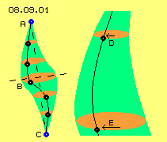
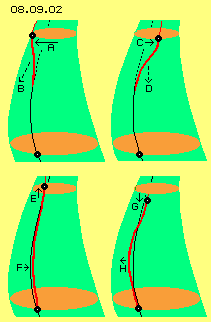
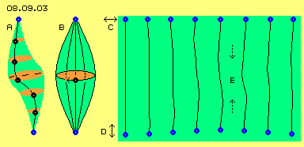
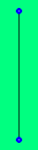

| Alfred Evert | 03.03.2009 |
08.09. All - Pressure
Dispersal
Material particles are an ´illusion´ respective that appearance comes up only because aether at local areas is moving by certain pattern. However, also here basic question is, why these movements should not run off into ambient aether, so local pattern would disperse into indifferent motions of all aether. Subject of this chapter is answer for that elementary question.
Maurers All-Pressure
Even Maurer assumes quite different basic-substance, he made up consequent conclusions, quite similar to some of my considerations (and some far beyond my ideas). I called that general ´compulsion´ of environment onto local units the ´aether-pressure´, while Maurer called that appearance ´All-Pressure´. At the following I take that appropriate term of ´All-Pressure´ (German ´All-Druck´ because ´All´ in German also has meaning of wider-space respective universe). At the following this effect is discussed in details.

Resting aether (A and C, blue) represents the poles. Several aetherpoints (black) are drawn with their connecting line between poles. All aetherpoints are swinging at diagonal planes (marked red), where aetherpoint B near centre is moving at most wide track. Light-green area marks moving-space of connecting line in shape of a double cone.
Right side at this picture, section of cone is sketched by larger scale. Bottom level E represents most wide swinging. Upside level D is positioned near Free Aether and represents swinging at most small radius. That level D thus should be much smaller, here drawn some wider so movement processes are visualized easier.
Both aetherpoints at D and E move with different speeds (see arrows), however are swinging by likely angle-speed around system axis. As long as this is true, all neighbouring aetherpoints at connecting line are swinging harmonious within space, moving at that cone-mantle between Free Aether and centre of potentialvortexcloud.
Tremble and Trundle 
In principle, four possibilities of additional movements exist, disturbing steady swinging motion. Upside left at A that aetherpoint (black) is accelerated forward in turning sense (see arrow). All aetherpoints downside of now must follow that fast motion. Connecting line thus is curved forward (new line is drawn red, old line is black and changed positions are dotted). A wave with forward-stroke comes up, transmitting downward (see dotted arrow B).
Upside right of picture, opposite situation is shown, where swinging of aetherpoint is delayed, so relative to its old position of connecting line it´s shifted some back, i.e. contrary to turning sense (see arrow C). Also here, downside neighbours must follow that delay, each some later. So again comes up a wave-motion, passing down towards centre along connecting line (see dotted arrow D).
An ´irregular´ motion of Free Aether could also shift that aetherpoint some upward (see arrow E), like sketched at picture at bottom left side. As a consequence, curvature of connecting line becomes tighten or is pulled some towards system axis (see arrow F). Opposite, Free Aether could push down observed aetherpoint some stronger (see arrow G), like sketched at picture at bottom right side. This ´pressure´ is transmitted further down and again a downward passing wave affects stronger curvature of that connecting line (see arrow H).
Up to now, here was assumed ´Universal Motion´ of Free Aether is characterized by swinging at most small radius, because various overlays result motion at ´sprialclustertracks´, which however as a whole shows some steady shape. Nevertheless also motions more intensive temporary will come up (e.g. based on radiation), so Free Aether around potentialvortexcloud can not really be assumed to be ´resting´. These ´unusual´ motions hit onto poles of swinging cones and overlay connecting lines. No matter which kind that ´tremble or trundle´ at poles is, resulting of is a wave-like motion running towards centre of potentialvortexcloud.
Wave-Stroke 
Further right, that line running straight (by this view) top-down is drawn and consequences of previous ´tremble and trundle´ are marked. Upside point of Free Aether (blue) here is moving horizontal to and fro (see arrow C), point at bottom is vertical moving some up and down (see arrow D). So in principle, previous four possibilities of disturbances are demonstrated.
Further right now is sketched, how these wave-like overlays from upper disturbance are running top-down and analogue from bottom disturbance are running bottom-up. Each unusual ´jiggle around´ of Free Aether results additional wave-motions, meeting at central area of potentialvortexcloud. These eight positions are combined to a ´movie´ at following animation, where these waves can be observed better. One also can see, not at any situation will result harmonic movement processes.

So if upside that bulgy connecting line B was compared with swinging rope, these disturbances of Free Aether would mean, ends of rope repeatedly show tense actions. Each time, a ´wave-like loop´ is released, running along that rope towards centre. Potentialvortexclouds are ´bound´ to Free Aether into all directions, i.e. from all sides these additional wave-strokes are running towards centre.
Concentration and Conservation
That central wide swinging can not escape outward, because it would need to force all that fine swinging aether all around into its wide scale of swinging track. Opposite, also that Free Aether can not compress that motion-ball. At previous picture for example, that connecting line B represents all neighbours in top-down direction. Even from both poles environmental pressure is affecting, these aether points can not be compressed into space more narrow. These points can only escape into shape of connecting line curved some stronger. This however means, all neighbour points in equatorial plane are pressed further outward - and naturally also there corresponding pressure from ambient aether affects against that extension. So motion-intensity within a vortex-complex is conserved at this area by pressure from all around, i.e. all-pressure.
This ambient pressure is not completely homogenous, but from all sides disturbances are running towards that motion-cloud. Along connecting lines they run towards centre as overlaying waves. These additional pressure-waves result a concentration of central swinging motions. That relative long stretched motion of local Bounded Aether thus not simply can disappear into environment, but is ´imprisoned´ within superior fine swinging of ambient Free Aether.
Universal Resonance
At part ´02. Universal Aether-Motions´ I described ´spiralclustertracks´ at which Free Aether is moving. There was assumed, these tracks are compound of overlaying circle-movement and their planes and radius are arranged by certain relations, e.g. based on 2/3-law, similar to insights of Global Scaling. So Free Aether would show some ´morphogenetic function´, as local vortices are forced to adequate swinging pattern - or quite ´inharmonious´ elements become dissolved.
Rupert Sheldrakes ´morphogenetic fields´ can not be an only abstract affecting principle, but my opinion is, these fields must be real swinging-pattern within real aether. Absolute direct kind they ´interact´ with other appearances of that unique medium, no matter local vortex-systems represent material-physical or mental-spiritual content (however these ´philosophic´ aspects can be discussed finally when physical aspects are detailed sufficiently).
However might be, my earlier consideration were too formalistic. Might be, Free Aether is only that chaotic ´hurly-burly´ of gigantic ´jumbled reception´ of all overlaying radiation from all directions of universe. Then, Free Aether must not inevitably be homogenous within total universe, but at different areas could be moulded different kind. So e.g. electrons or also atoms would not necessarily be total identical anywhere. Depending on ´pollution level´ of Free Aether local vortex-complexes could be adjusted somehow different. This idea of ´deformed atoms´ etc. might look strange at first view - however is real already at earth. Gravity for example is such a ´deformation´ of material vortex-structures.
Gravity
As an alternative for common understanding of gravity e.g. are assumed general pressure of radiations or pressure by gravity-waves (or ´particle-fans´ even create graviton-particles), where celestial bodies mutually present shadow, i.e. protect pressure from certain direction. This might work at celestial bodies nearby each other (e.g. between planet and moon), however for celestial bodies far off these shadow-angles practically are null.
As discussed upside, such radiation pressure (besides general all-pressure) affects centripetal onto local vortex-systems. These pressures certainly support concentration of small vortex-clouds and thus for building extended assemblies (like Maurer described comprehensive). This all-pressure of Free Aether well affects similar to that ´energy´ commonly called ´weak nuclear power´.
´Strong nuclear power´ is told to produce that mass-concentration (necessary for attracting fast circling electrons) at atomic nucleus - strange enough likely charge of protons won´t affect repulsive (and ´explanations´ of modern quantum-hypotheses not at all are more plausible). In reality, whole atom is build by nothing else than quite normal aether (detailed some chapters later). Whole atomic motion-complex keeps concentrated as a local unit by nothing else than just that normal all-pressure.
At an assembly of atoms, naturally exists mutual ´shadow´ against radiation and all-pressure. Also earth as a whole at its surface is affected by these centripetal pressures. However that all-pressure is not identical with gravity, but is only one component of.
There is no unique gravity-force, but that effect has different sources. Previous all-pressure and radiation-pressure are components, ´polluted´ aether is an other and ´spiral-pressure´ is once more an other component (see following chapters). Based on different sources, that concentrating effect is different at micro-sized appearances (e.g. electrons, atoms and atomic assemblies), near celestial bodies (e.g. earth, however different at gas-planets) and at macro-sized appearances (e.g. sun-systems and galaxies). There is no uniform ´gravity´. This ´force´ is different anywhere. Calculating with ´standardized value of earth-gravity´ into universe by light-years and deducing world-views ... is really fantastic.
By common understanding, material particles exist and all around Nothing exists. I can not understand why Something should not immediately dissolve into ambient Nothing. How should outmost Something of particle-border be able to keep its place - without disappearing into absolute Nothing? That unsolved problem for example was cause for claiming, instead of Nothing must be a Something anywhere, without any border, a gapless Whole, called aether.
At chapter ´04.04. Maurers Principle of Existence´ I made commentaries to that most interesting book. Maurer describes many points of view conforming to my considerations, however I disagree at some of his opinions. For example his starting point is a ´granules-like basic-matrix´ as primeval substance, which however he finally calls ´indefinable´ - while my aether-definition is totally clear. Within his medium are embedded ´motion-units´, demanding space and thus must stand against pressure of environment. Wider volumes show relative small border-surface. So these units build assemblies, up to organism, and thus can resist against general ambient pressure. Opposite, that ´All-Pressure´ supports coming up of large structures of motion-units.
At previous chapters, motion pattern of potentialvortexclouds was described, where at centre most wide swinging exists all times, while further outward narrow swinging of Free Aether exists. At last chapter ´Tracks with Stroke´ this cone-like extension of swinging-radius was discussed once more. At picture 08.09.01 left side, cross-sections in axial direction through centre of potentialvortexcloud is sketched once more.
Centre of potentialvortexcloud does not show increased ´energy´, but anywhere is likely aether and all motions are running (probably nearby) likely fast (only overlays show motions into likely or contrary directions resulting increased or reduced speeds). At centre, motions only occur at tracks more stretched. At total environment of motion-cloud however exists narrow swinging motion, these small local areas of coarse swinging thus are surrounded by wide space of all Free Aether.
At centre of local area of Bounded Aether exists swinging at relative wide stretched tracks. This coarse shape of motion can not escape outward, because relative narrow swinging of all ambient Free Aether affects contrary. In addition, diverse disturbances from outside affect wave-like pressure towards centre. Motion pattern of local vortex-complex thus is conserved and concentrated by that all-sided aether-pressure respective that ´all-pressure´.
Such potentialvortexclouds thus are permanently affected by swinging motions of environment, are pressed into fitting shape or are deformed or even become dissolved. Local vortex-complexes can exits long term only if they are sufficiently ´resonant´ to motions of environment. There must exist certain ´balance´, why e.g. electrons show certain volume and thus are long-lived units.
There is no ´mass-attraction´, attracting-forces at all can not really exist, that idea indeed is ´magical´. There are lots of ´planet-walks´, where wanderer for kilometres can think about, how these balls with size of footballs, oranges or pinheads via which tow-line are attracted by sun. The only real existing force can only affect by pressure - however by sure, still not through Nothing.
08.10. Milky-Way and Sun-System
08. Something Moving